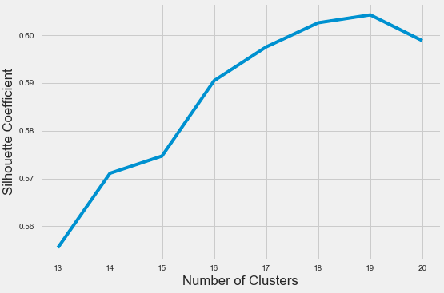
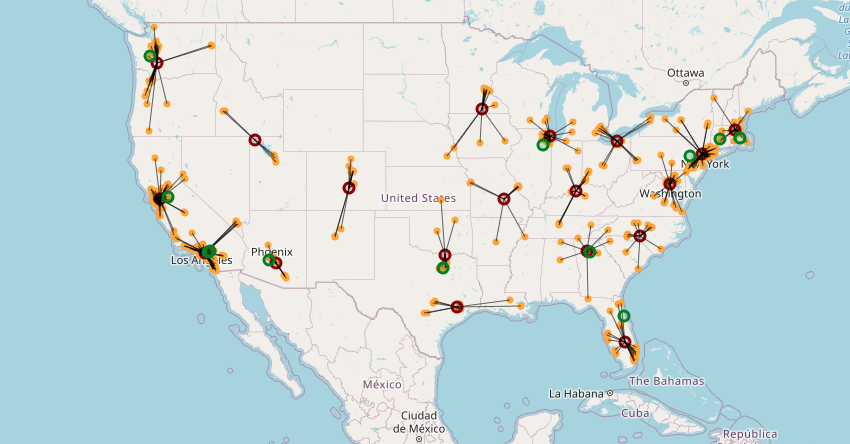

On the Trail of Trader Joe’s Warehouses

Recently, I came across a project by Sam Burer via Hacker News archive. In his project, Sam mainly tries to find the location of warehouses/distribution centers of Trader Joe’s, a well-known grocery retailer in the US, by utilizing the location of each Trader Joe’s store. He does it very creatively by exploiting centroids of the clusters suggested by the K-means algorithm, a basic algorithm that is primarily used to tackle unsupervised, clustering, problems in the Machine learning domain.
With this project, I not only try to update his project as I am encouraged by the oldness of his post (June 2015) but also tweak it just a little bit with my interpretation.
Okay, let’s start..
The number of Trader Joe’s has increased from 451 to 539 since Sam’s post. Besides, they have omitted the definitive list of their stores from their website in the meantime. Hence, I needed to build a pipeline that systematically scrapes their website and creates a data set that contains every TJ’s and the corresponding addresses.
As it can be guessed, the scraped addresses are string-type, and we need to transform them so that our algorithm would make sense of them. The transformation can be done by geocoding. It is a process that resolves string type addresses into geographic coordinate pairs. Coordinate pairs are nothing but float-type tuples of which a numerical algorithm would make sense without any problem.
The K-means algorithm requires a pre-defined number of clusters, k, where observations are partitioned into. Thus, one needs to guess the number of clusters in advance. In his original post, Sam had guessed it as 22, approximately square root of the number of Trader Joe’s at the time (451), so that each warehouse would serve on average about 22 stores. I experimented with numbers between 21 and 23 for k in the line of his rationale, however, I couldn’t come up with valid results; given that one-third of the Trader Joe’s are located in California, some warehouses in other states would end up serving only up to 5-6 stores. I dont think his scenario would be financially feasible for any company. Hence, I decided to approach the problem slightly more analytical and apply a quick silhouette analysis.
The silhouette score of the final configuration of the data is calculated by averaging the silhouette value of the individual data points (store locations). A silhouette value of an observation can be taught as its degree of similarity to its own cluster compared to other clusters. The score ranges from -1 to +1, where a high value indicates a more appropriate clustering configuration.
Silhouette scores of different k values ranging from 13 to 20 1 are calculated, and k=19 is found to be the most appropriate configuration. Besides, the number of stores that each warehouse serves is more homogeneously distributed this time as opposed to previously tried k values. It should be noted that the K-means algorithm only converges to a local minimum rather than a global minimum, hence the results are strongly influenced by the initial conditions. In other words, cluster configurations may seem different from run to run unless its random state is seeded, even as k stays constant.
As the last step, It would be nice to have some reference addresses of warehouses to validate our findings. Unfortunately, Trader Joe’s is reluctant to make the location of its warehouses public however one can reach information about some of its warehouses by digging deeper into the internet. Sam had managed to find the address of six of them from various internet sources and shared them with their evidence in his original post at the time. I combined my findings with his and increased the number of warehouses locations to twelve, mainly thanks to this blog post.
The following map shows all 539 TJ’s in orange while showing the 19 guessed warehouses in red. Also, the 12 “known” warehouse locations are depicted in green. It can be seen below that the “known” warehouses are not too far from the guessed ones. It is fascinating to have “acceptable” guesses with such a basic algorithm.
You can reach out to the source code of this project and to the created GeoDataFrame via my GitHub repo.
Feel free to utilize the dataset for your own project :v:
-
I selected the range of k values as [13, 20]. The lower bound is 13 because I know that at least 12 warehouses exist in the light of my internet search. The upper bond is 20 as I already experienced with the values between [21, 23]. ↩︎